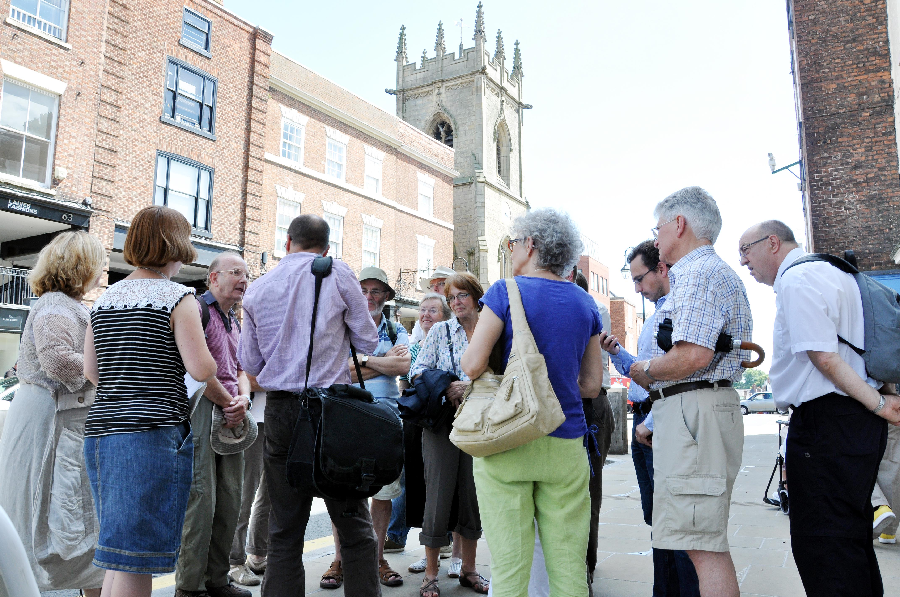

Blog
Viewing posts by Catherine Clarke

A new marketplace for medieval Swansea?
One of the discoveries which has really got me excited this week is a great example of how textual analysis and historic mapping can come together to provide a new insight into a medieval landscape. In this case, it started with the testimony of our medieval witness John ap Hywel, a labourer, who tells us that he watched the hanging with a large group of other people in a 'platea' near St Mary's church.
Discovering Medieval Cities
If you're interested in our work on medieval Swansea, you might want to take a look at our the projects we've undertaken in Chester (Discover Medieval Chester and Mapping Medieval Chester). They'll give you an idea of some of the digital tools we bring to our research, as well as the events and activities which enable the wider community to engage with our work. The Medieval Chester Blog has recent stories about the GPS-enabled mobile resources we've produced for medieval Chester - something we hope to do for Swansea too - and recent coverage on Heno on S4C.
What should medieval Swansea look like?
So: how should we go about our 3D visualisation of medieval Swansea? Should our final product be something creative, imaginative and speculative - but immersive and engaging? Or should it be a more cautious, conservative construct which makes uncertainties and unknowns visible? There's some strength of feeling on each side of this debate amongst the project team, and we're confronting some interesting ideological, theoretical and methodological questions as we decide how to proceed.